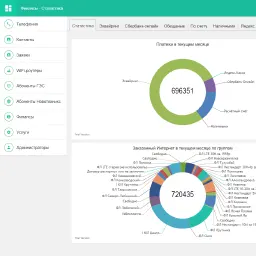

IT-специалист
Шван Александр Станиславович
Сетевой инженер
Системный администратор
PHP-разработчик
Ищу работу в IT‑проектах
Сети
Операторы связи
Информационные системы
Системы автоматизации
Системы мониторинга
Разработка программного обеспечения
- В основе фреймворк Laravel на языке PHP
- Шаблонизатор Blade
- Вёрстка с использованием Bootstrap или Tailwind
- Сборка с использованием Composer, NPM, Webpack
- Интеграция API
Сетевое администрирование
IPv4
VLAN
WLAN
DHCP
NAT
OSPF
QoS
MPLS
Radius
Системное администрирование
- Операционные системы Linux и Windows
- Реляционные СУБД PostgreSQL, MySQL
- Web-сервер Apache
- Система мониторинга Zabbix
- Docker
Реализованные проекты
✓ Информационная система для управления предприятием оператора связи беспроводного широкополосного доступа Новотехникс
✓ Автоматизированная система выдачи грузовых тележек в СТЦ «МЕГА Омск»
✓ Android приложение для юстировки антенн радиомаршрутизаторов MikroTik в Google Play
✓ Система термоконтроля тепличного комбината на основе оборудования ОВЕН
 
Профессиональное образование
Учебный Центр «Специалист» при МГТУ им. Н.Э.Баумана
Веб - программист. Профессиональная разработка на PHP и JS.
MikroTik Courses — учебный центр Микротик
MTCNA (MikroTik Certified Network Associate)
MTCTCE (MikroTik Certified Traffic Control Engineer)
Высшее образование
Омский государственный университет им. Ф.М. Достоевского
Инженер
230101 Вычислительные машины, комплексы, системы и сети
Факультет Компьютерных Наук
Опыт работы
Август 2008 - декабрь 2012
Индивидуальный предприниматель
Монтаж и обслуживание оборудования операторов связи
Монтаж и обслуживание систем видеонаблюдения и АСУТП
Январь 2013 - настоящее время
Технический директор в ООО «Новотехникс»
Услуги доступа к сети «Интернет» и каналам связи
Контакты
Телеграм: @xandrman
E-mail: xandrman@yandex.ru